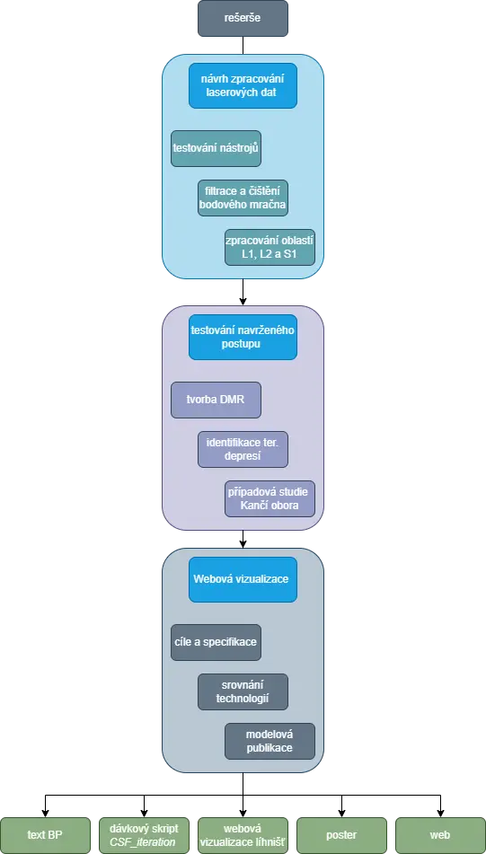
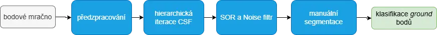
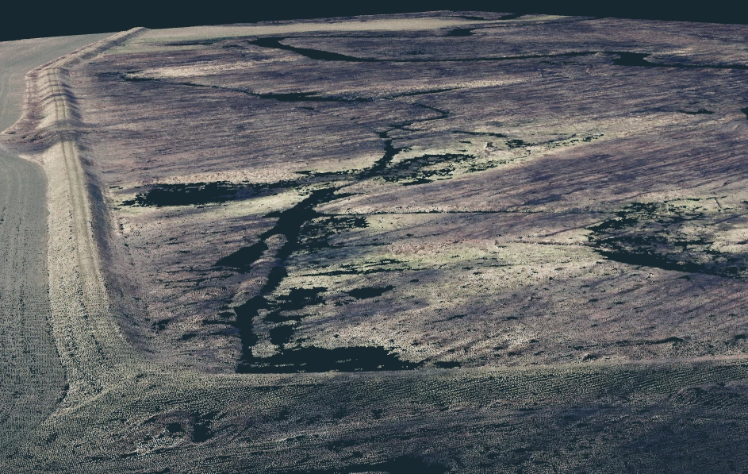
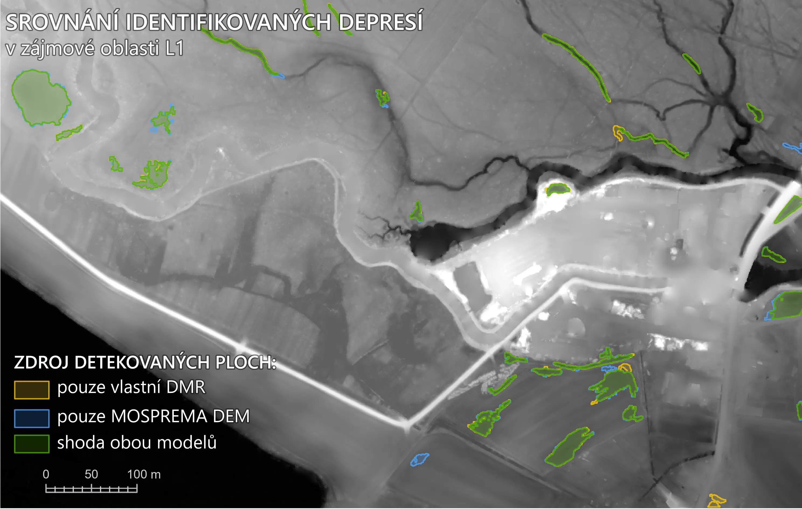
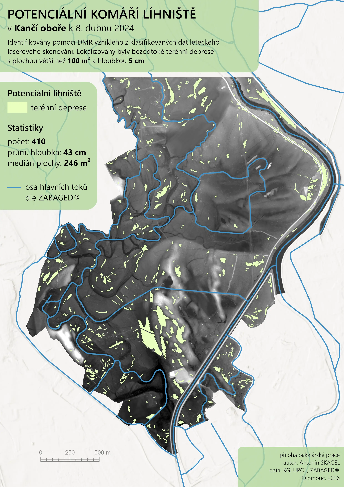

Anotace Abstract
V rámci této bakalářské práce byly stanoveny dva hlavní směry výzkumu.
První se zaměřuje na zpracování bodových mračen získaných technologií LiDAR v rámci leteckého skenování. Zpracování obnášelo vytvoření replikovatelného pracovního postupu pro čištění a filtraci bodových mračen s cílem selektivního výběru bodů reprezentujících terén. Tyto body byly následně rasterizovány pro vytvoření spojitého digitálního modelu terénu s velkým prostorovým rozlišením, a to za účelem identifikace potenciálních komářích líhnišť.
Druhý směr výzkumu byl zaměřen na nástin prezentace bodových dat v online prostředí, v rámci, kterého byly definovány specifické požadavky publikovaných dat pro potřeby monitoringu komářích líhnišť. Byly porovnány možnosti proprietárních i otevřených webových řešení jako ArcGIS Online, Three.js, Potree, a Cesium. Po zvolení nejvhodnějšího z porovnávaných řešení byla provedena vzorová publikace zpracovaných dat s vyznačenými potenciálními komářími líhništi.
This bachelor's thesis identified two main areas of research.
The first focuses on the processing of point clouds acquired using LiDAR technology during aerial scanning. The processing involved creating a reproducible workflow for cleaning and filtering point clouds with the aim of selectively choosing points representing the terrain. These points were subsequently rasterized to create a continuous digital terrain model with high spatial resolution, for the purpose of identifying potential mosquito breeding sites.
The second research direction focused on outlining the presentation of point data in an online environment, within which specific requirements for published data were defined for the needs of monitoring mosquito breeding sites. The capabilities of both proprietary and open-source web solutions, such as ArcGIS Online, Three.js, Potree, and Cesium, were compared. After selecting the most suitable solution from those compared, a sample publication of the processed data was created, highlighting potential mosquito breeding sites.
Cíle práce
Cílem bakalářské práce bylo zpracování a návrh prezentace laserových dat pro potřeby monitoringu komářích líhnišť. Zpracováno bylo několik datových sad s cílem získat DMR (digitální model reliéfu) s vyznačenými komářími líhništi. Jedním z hlavních cílů byla publikace zpracovaných dat v online internetovém prostředí. Dílčími cíli, kterými se práce zabývala jsou:
- filtrace a čištění laserových dat
- tvorba DMR
- identifikace komářích líhnišť
- nástin možností online prezentace 3D modelů
- online publikace 3D modelů
Výsledky práce umožní využít vytvořený pracovní postup pro replikovatelnou tvorbu digitálních modelů o velkém prostorovém rozlišení, a to pro potřeby identifikace potenciálních komářích líhnišť. Dále také práce slouží jako podklad k výběru řešení pro publikování 3D dat v online internetovém prostředí.
Postup zpracování

Metody a materiály
Klíčové metody
- Filtrace bodového mračna: aplikace algoritmů za účelem oddělení bodů reprezentujících terén od zbytku mračna.
- Čištění laserových dat: zpřesnění klasifikace automatickým odfiltrováním bodů šumu a zbytkových nadzemních bodů.
- Manuální segmentace: proce ručního čištění bodového mračna za účelem odstranění zbylých nežádoucích bodů.
- Rasterizace: proces převodu hodnot bodového mračna na pravidelnou mřížku.
- Interpolace: proces odhadu hodnot v místě na základě hodnot okolních bodů.
- Komparace: proces porovnávání různých datových sad za účelem identifikace rozdílů a podobností.
- F1 skóre: metrika podobnosti mezi vygenerovanými a skutečnými výsledky. Jedná se o harmonický průměr přesnosti a úplnosti.
- LoD: Technika umožňující měnit úroveň podrobnosti 3D modelu v závislosti na vzdálenosti od kamery.
- Oktálový strom: Stromová datová struktura pro efektivní ukládání a vyhledávání 3D dat.
Klíčové nástroje
- Filtrace laserových dat: Cloth Simulation Filter (CSF) v SW CloudCompare a poloautomatická klasifikace bodového mračna v SW 3DSurvey
- Čištění laserových dat: SOR a Noise filtry, CEA Virtual Broom v SW CloudCompare a nástroje pro manuální segmentaci bodového mračna v SW 3DSurvey
- Tvorba DMR: nástroj LAS Dataset To Raster v SW ArcGIS Pro
- Identifikace potenciálních komářích líhnišť: Locate Depressions v SW ArcGIS Pro
- Online prezentace 3D modelů: platforma Cesium a WebGL Potree
Použité programy
- CloudComapre: Zpracování laserových dat
- 3DSurvey: Zpracování laserových dat
- ArcGIS Pro: Tvorba DMR, identifikace terénních depresí a vizualizace
- Cesium ion: Optimalizace, uložení a prezentace dat
- CesiumJS: Vizualizace 3D modelů v online prostředí
- Potree: Vizualizace masivního bodového mračna
- PotreeConverter: Optimalizace masivního bodového mračna
Použitá data
- MOSPREMA LiDAR: výsledky leteckého skenování CHKO Litovelské Pomoraví ve formátu LAZ. Použita pro testování postupu zpracování zájmových oblasti L1 a L2.
- Soutok LiDAR: výsledky leteckého skenování části CHKO Soutok ve formátu LAZ. Použita pro testování hromadného zpracování zájmové oblasti S1 v rámci případové studie části CHKO Soutok - Kančí obory.
- MOSPREMA DEM: digitální model terénu vzniklý z MOSPREMA LiDAR dat. Použit ke komparaci s vytvořeným DMR.
- ArcČR: vektorová databáze obsahující administrativní datové vrstvy. V rámci práce využita pro tvorbu mapových vizualizací.
- HY_P: vektorová databáze z INSPIRE tématu VODSTVO, použitá pro filtraci identifikovaných bezodtokých oblastí.
- VZCHU: vektorová vrstva velkopločných zvláštně chráněných území, poskytovaná AOPK ČR.
- Klad listů SM5: vektorová síť mřížka listů Státní mapy 1 : 5 000. Použita pro rozčlenění zájmové oblasti S1
Výsledky
Stežejním výsledkem práce je navržený postup zpracování laserových dat, popsán v kapitole 4.4. Proces zahrnuje předzpracování (spojení překryvných dat, oříznutí či rozdlaždicování bodových mračen), pro které se nejvíce osvědčily nástroje dostupné v ArcGIS Pro.
Samotná filtrace využívá hierarchickou iteraci CSF filtru, s následným zlepšením klasifikace pomocí použití SOR a Noise filtrů a manuální segmentace, asistované nástrojem CEA Virutal Broom.
Alespoň částečné automatizace procesu bylo dosaženo vytvořením dávkového souboru CSF_iteration, umožňujícího hromadnou filtraci několika bodových mračen.

Použitelnost navrženého postupu byla testována porovnáním DMR vytvořeného ze zpracovaných zájmových oblastí L1 (45 ha) a L2 (125 ha) s MOSPREMA DEM. Použití nástroje LAS Dataset To Raster s parametrem Binning average a interpolací prázdných buněk metodou přirozeného sousedství přinesl plošeně nejmenší absolutní odchylku hodnot. Tímto srovnáním bylo také zjištěno, že navržený postup nedokonale odstraňuje báze kmenů a ležící mrtvé dřevo. Tato odchylka se ovšem většinově nepřesahuje 25 cm.
Na základě testování schopnosti identifikace bezodtokých oblastí bylo zjištěno, že použití nástroje LAS Dataset To Raster s parametrem Binning minimum a interpolací prázdných buněk metodou přirozeného sousedství dokázal v zájmových oblastech L1 a L2 dosáhnout 93% shody s oblastmi identifikovanými z MOSPRERMA DEM (určeno na základě F1 skóre, hodnotící nastalý překryv mezi depresemi metrikami přesnosti a úplnosti). Pro tuto identifikaci bylo požito nástroje Locate Depressions, se stanovenými parametry potenciálního líhniště na minimální hloubku 5 cm a minimální plochu 100 m².
Takto otestovaný postup byl aplikován v rámci případové studie na zájmovou oblast S1 (500 ha), kterou byla Kančí obora, tedy část CHKO Soutok severně od města Břeclavi. kde bylo identifikováno 410 potenciálních komářích líhnišť.


V rámci online prezentace 3D dat a zjištěných poznatků byly stanoveny obecné a specifické požadavky pro interaktivní vizualizaci potenciálních komářích líhnišť. Na základě těchto poznatků bylo provedeno srovnání proprietárních a otevřených řešení pro online prezentaci 3D dat, z nichž nejvhodnější se ukázala být platforma Cesium. V rámci tohoto řešení bylo použito cloudového uložiště Cesium ion pro optimalizaci a správu zpracovaných dat, a knihovny CesiumJS pro vytvoření interaktivní 3D vizualizace, zobrazující vygenerovaný terén ve formě meshe, na okrajích spojitého s Cesium Global Terrain, texturovaný ortofotomapou a volitelně i stínovaným reliéfem. Nadzemní objekty jsou zde vyjádřeny pomocí bodového mračna obsahujícího Off-Ground body. Terénní deprese jsou zde vyjádřeny jak 3D modely, znázorňující identifikované oblasti v "zatopeném" stavu. při výběru deprese se uživateli zobrazí pop-up okno s relevantními atributy.
| Platforma | Technologické a ekonomické aspekty | Subjektivní hodnocení náročnosti | |||||
|---|---|---|---|---|---|---|---|
| Licence | Cena | Uložení datových sad | Zpracování | Publikace | Zobrazení mapového podkladu | Kombinace datových formátů | |
| Potree | open-source | zdarma | self-hosted | střední | střední | střední | vysoká |
| Babylon.js | open-source | zdarma | self-hosted | vysoká | střední | vysoká | vysoká |
| Cesium | open-source / proprietární |
Freemium (5 GB uložení a 15 GB/měsíc streaming) |
cloud / self-hosted | nízká | nízká | nízká | nízká |
| ArcGIS Online | proprietární | placená | cloud | nízká | nízká | nízká | nízká |
Závěr
Cílem práce bylo provedení komplexního procesu zpracování a prezentace laserových dat pro potřeby identifikace a montioringu komářích líhnišť. V rámci dílčích cílů byl navržen postup zpracování laserových dat za účelem klasifikace bodů reprezentujících terén.
Navržený postup (popsán v kapitole 4.4) zahrnuje předzpracování, hierarchickou iteraci CSF filtru, čištění pomocí SOR a Noise filtrů a manuální segmentaci, asistované nástrojem CEA Virtual Broom. Navržený postup byl testován porovnáním DMR vytvořeného ze zpracovaných zájmových oblastí L1 a L2 s MOSPREMA DEM, přičemž bylo zjištěno, že navržený postup nedokonale odstraňuje báze kmenů a ležící mrtvé dřevo. Testováním použitelnosti vzniklého DMR pro potřeby identifikace terénních depresí, které se po zaplavení mohou stát komářími líhništi, bylo ovšem zjištěno, že zpracovaných oblastech L1 a L2 dosahují identifikované oblasti 93% shody s sníženinami identifikovanými z MOSPREMA DEM.
Postup filtrace, rasterizace a identifikace terénních depresí byl následně aplikován v rámci případové studie na zájmovou oblast S1, kterou byla Kančí obora, tedy oblast o 500 ha, která je součástí CHKO Soutok severně od města Břeclavi. V této oblasti bylo identifikováno 410 potenciálních komářích líhnišť.
Vizualizace zpracovaných dat a identifikovaných komářích líhnišť byla realizována pomocí platformy Cesium, zvolené na základě srovnání proprietárních a otevřených řešení. Aplikace vznikla jako modelová iteraktivní 3D vizualizace potenciálních komářích líhnišť.
Hlavními přínosy práce jsou replikovatelný postup zpracování laserových dat, částečně automatizovaný dávkovým skriptem CSF_iteration.bat a modelová 3D online vizualizace potenciálních komářích líhnišť. Dalším přínosem je identifiakce potencálních komářích líhnišť v části CHKO Souotk. Poznatky a výstupy práce mohou být využity jako základ pro další rozvoj postupu identifiakce terénních depresí z laserových dat a tvorby webových vizualizací v rámci problematiky monitoringu komářích líhnišť.
